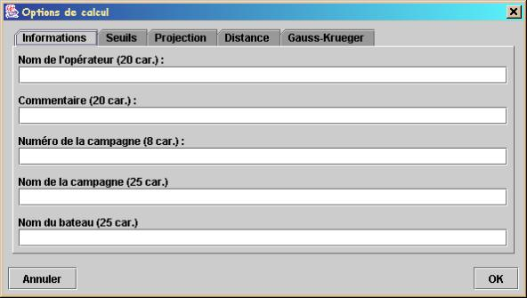
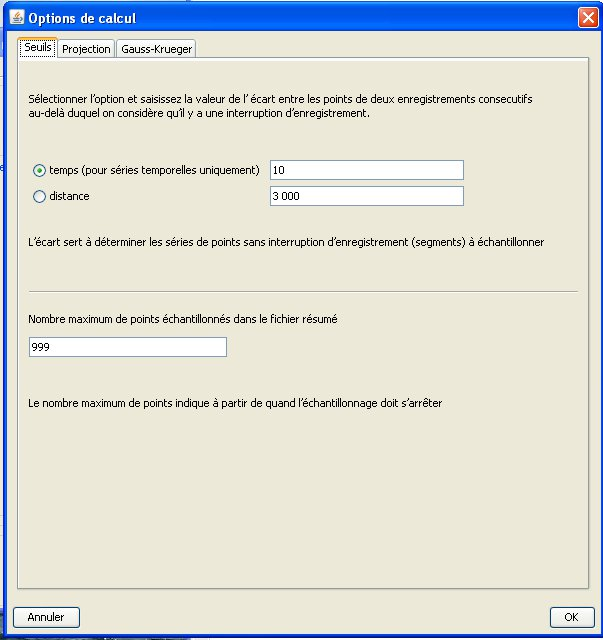
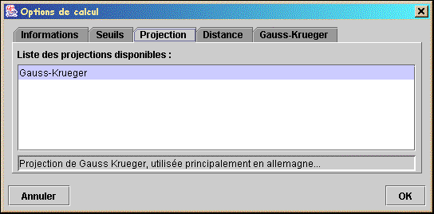
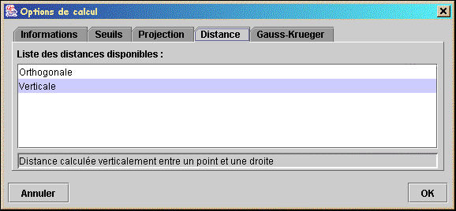
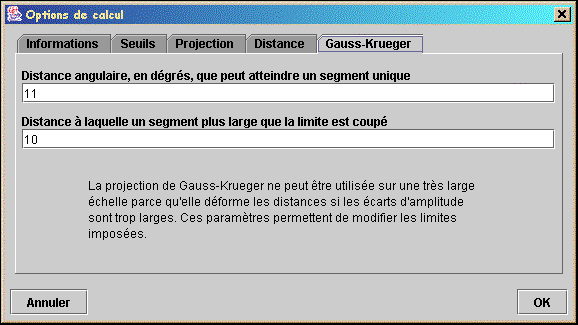

L'application Ends & Bends est largement paramétrable pour ce qui concerne les calculs et l'export de fichier résumé.
Le boutons « Options » donne accès à une boîte de dialogue qui contient cinq onglets, chacun permettant de paramétrer un aspect de l'application.
|
Informations |
Permet de paramétrer les données d'entête écrites dans le fichier résumé. |
|
Seuils |
Permet de définir les seuils utilisés lors du chargement du fichier, l'écart en temps qui permet de détecter les discontinuités de segment et le nombre de points autorisés dans un fichier résumé. |
|
Projection |
Permet de choisir la projection. |
|
Distance |
Permet de choisir la distance. |
|
Gauss-Krueger |
Permet de régler les paramètres spécifiques à la projection de Gauss-Krueger. |
Cette page permet de saisir les informations nécessaires pour renseigner les entêtes des fichiers résumé exportés par la fonction « Sauvegarde du fichier résumé ».

Cette page permet de régler les seuils utilisés dans lors du chargement du fichier et dans les calculs.
Deux seuils sont pris en compte :

Cette page permet de choisir le type de projection utilisé au chargement des fichiers de navigation.
Actuellement, seule la projection de Gauss-Krueger est implémentée.

Cette page permet de choisir la distance qui est utilisée dans les calculs. Cette distance est mesurée entre un point et une droite.
Deux distances sont disponibles :

Cette page permet de définir les paramètres spécifiques à la projection de Gauss-Krueger.
Ces paramètres définissent l'écart maximal de longitude que peut supporter la projection.
Pour être plus souple, ce paramètre est décomposé en deux :
Cette décomposition a pour but d'éviter de créer des segments très petits. Par exemple, avec les valeurs par défaut, un segment dont l'écart maximal est de 11,05° sera coupé en deux segments de 10° et de 1,05°.
